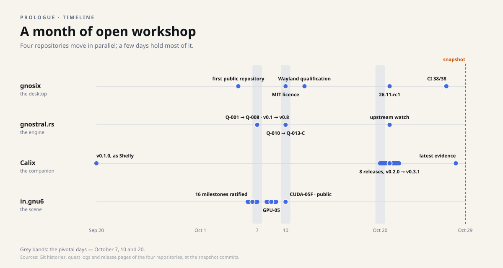

Snapshot of October 29, 2026. This dossier describes the four repositories as they stood that day; the projects have moved on since, and the repositories are the authority. Underlined links lead to the sources, frozen at their state of that day.
Timeline
A month of open workshop
From September 20 to October 29, 2026, four repositories move forward in parallel. A few days hold everything: October 7, 10 and 20. Here is the month, project by project, day by day.
The month on one timeline

Day by day
| Date | Repository | What happens |
|---|---|---|
| September 20 | Calix | First release, v0.1.0, still under the name Shelly. |
| October 5 | gnosix | First public repository, with a CI contract from day one. |
| October 6 | in.gnu6 | The quest log is ratified; ten milestones are ratified the same day. |
| October 7 | gnostral.rs | Quests Q-001 to Q-008 closed; versions 0.1 to 0.8 published. |
| October 7 | in.gnu6 | Six more milestones: the mandate, sixteen milestones, is complete. |
| October 8–9 | in.gnu6 | Native-rendering research (GPU-05). |
| October 9 | gnostral.rs | The partial Q-009 track is dated and kept as is. |
| October 10 | gnosix | From the GPL to the MIT licence. |
| October 10 | gnostral.rs | The native proof chain, from Q-010 to Q-013-C. |
| October 10 | in.gnu6 | The CUDA-05F protocol, a 125 s endurance run, the repository made public. |
| October 12 | gnosix | Wayland qualification: click, two screens, drag and drop. |
| October 20 | Calix | Six releases, v0.2.0 to v0.2.5: the Calix name, notifications, fixes, the mark, navigation. |
| October 21 | gnosix | First public pre-release, v26.11-rc1 « Ardoise ». |
| October 21 | Calix | v0.3.0, the release that measured space. |
| October 21 | gnostral.rs | A research watch on upstream systems. |
| October 22 | Calix | v0.3.1, the release that runs on the machine. |
| October 27 | gnosix | CI contract at 38/38 after merging the pre-release; a default desktop profile. |
| October 28 | Calix | Latest evidence before the snapshot: the release document has a single writer. |
| October 29 | prologue | This dossier's snapshot: the four repositories, checked and frozen as they stood that day. |